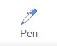
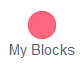
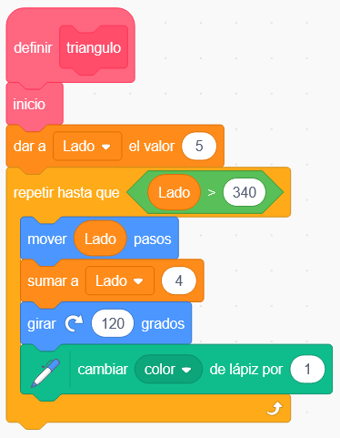
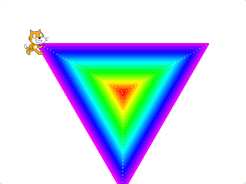
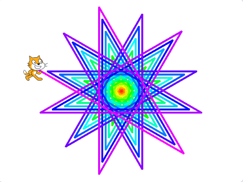
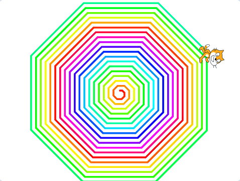

11. Drawing spirals¶
En esta práctica vamos a mover a un personaje por la pantalla para que dibuje varias espirales con colores.

We start the Scratch editor.
Click language button upper menu bar and select English.
Añadimos una nueva variable Lado que guardará el tamaño del lado que se está dibujando en este momento.
Press the variables button
 ,
,click on create a variable
 .
.Change the name of the variable to Lado
Añadimos una nueva extensión con el botón añadir extensión abajo a la izquierda.
Seleccionamos la extensión Lápiz para poder dibujar.

En la barra de código aparecerá un nuevo icono, el Lápiz , con instrucciones de color verde oscuro.
Creamos un nuevo bloque llamado inicio.
First we click on the button my blocks 
Then click on create a block

Then we change the name of the new block to inicio
El bloque inicio servirá para iniciar el programa. Moverá al gato al centro de la pantalla con tamaño pequeño. Esconde la variable Lado, baja el lápiz para que pinte, establece el grosor y color del lápiz y borra la pantalla.

Creamos un nuevo bloque llamado cuadrado.
First we click on the button my blocks
Then click on create a block
Then we change the name of the new block to cuadrado
El bloque cuadrado servirá para dibujar una espiral cuadrada en la pantalla.
El tamaño del lado se inicia con el valor 5 y va creciendo de 4 en 4 hasta que valga igual o más que 340.
En cada paso se dibuja una linea de tamaño "Lado", aumenta el tamaño del lado, gira 90º y aumenta el color del lápiz.

Si hacemos clic sobre el bloque "definir cuadrado", en la pantalla aparecerá la espiral cuadrada.
Ahora vamos a crear un nuevo bloque llamado triangulo.
First we click on the button my blocks
Then click on create a block
Then we change the name of the new block to triangulo
El bloque triángulo es muy parecido al bloque cuadrado, solo cambia el ángulo de giro.
Para aprovechar el programa ya realizado, vamos a pulsar con el botón derecho del ratón sobre las instrucciones de cuadrado y elegimos la opción duplicar.

una vez duplicado el programa, lo enganchamos en el bloque triángulo y cambiamos el ángulo de giro.
Si hacemos clic sobre el bloque "definir triangulo", en la pantalla aparecerá la espiral triangular.

{kind=link}
{kind=link}
{kind=link}
Ejercicios¶
Haz un nuevo bloque que dibuje una espiral en estrella. Modifica los parámetros del nuevo bloque para girar 150 grados.
Crea un nuevo bloque para dibujar una espiral octogonal. Los giros deben ser de 45 grados. El lado debe sumar 1 en cada repetición y se debe repetir hasta que el lado sea mayor que 150.
Experimenta con el programa para crear nuevos dibujos originales.